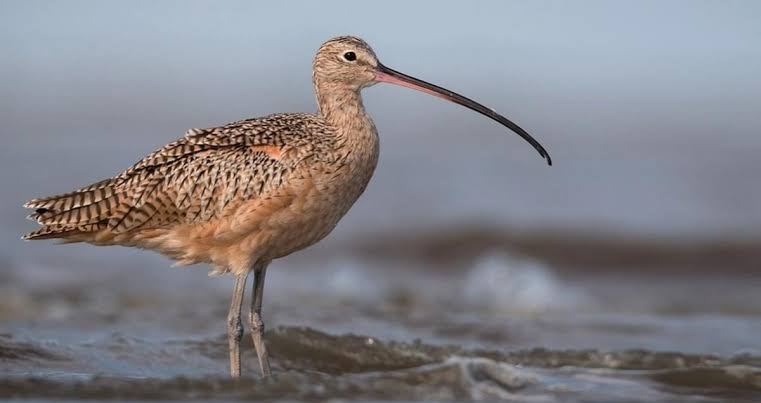

Curlew
Birds
The curlews, genus Numenius, are a group of nine species of birds, characterised by long, slender, downcurved bills and mottled brown plumage. The English name is imitative of the Eurasian curlew's call, but may have been influenced by the Old French corliu, "messenger", from courir, "to run".
Scientific name: Numenius
Phylum: Chordata
Order: Shorebirds
Rank: Genus
Higher classification: Sandpiper
Mass: Eurasian curlew: 730 g, Eurasian whimbrel: 360 g,
Curlew, any of numerous medium-sized or large shorebirds belonging to the genus Numenius (family Scolopacidae) and having a bill that is decurved, or sickle-shaped, curving downward at the tip.
There are eight species. Curlews are streaked, gray or brown birds with long necks and fairly long legs. They breed inland in temperate and sub-Arctic regions of the Northern Hemisphere and migrate far south.
During migration, they frequent dry uplands, where they feed on insects and seeds; wintering birds occupy marshes and coastal mud flats, where they probe for worms and fiddler crabs.
The bristle-thighed curlew (N. tahitiensis) breeds in the mountains of Alaska and migrates some 6,000 miles (9,650 km) to winter on islands in the South Pacific.
The common, or Eurasian, curlew (N. arquata), almost 60 cm (24 inches) long including the bill, is the largest European shorebird.
This species breeds from Britain to Central Asia.
The Eskimo curlew (N. borealis) is one of the world’s rarest birds, a species now virtually extinct. It formerly bred in abundance in Arctic America and wintered on the pampas of South America. The population of Eskimo curlews was severely diminished during the 19th century, when the birds were killed by market gunners.